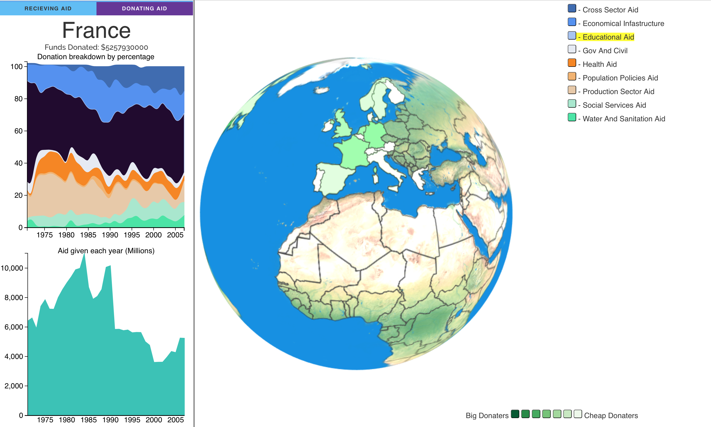
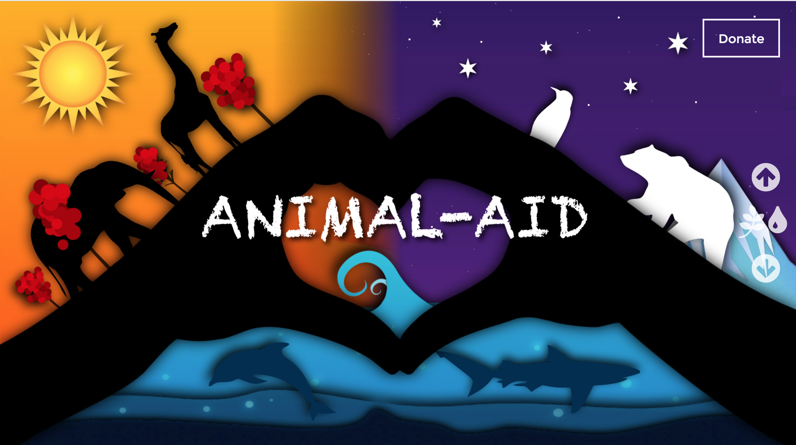
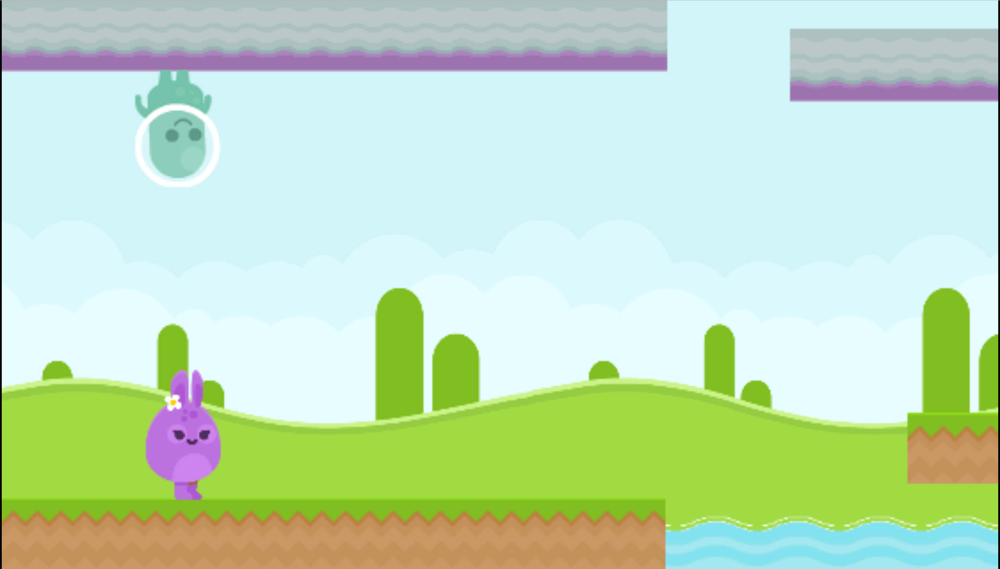

Projects
World Aid
World Aid a data visualisation platform using 3D and 2D data displays. It is used to display the contributions as well as aid received globally as well as highlighting an aid breakdown. This was my final project at GA created in collaboration with my classmate.
Animal Aid
A group project using VR to simulate an animals habitat in order to immerse the user inside the animals world. We used A-Frame to create the project which was great fun overcoming the challenges using such an expermental technology
Workspace

Workspace is a full business management platform incorporating real time chat, Business, Group and individual calendars. It was created using rails and implemented AJAX for the chat and calendar features. It displayed the power of rails that such a large website is able to be created in a week.
When Worlds Collide
After finishing tic tac toe during project zero I wanted to create a full phaser game. It was a massive challenge learning all the game logic needed but it was very fun! It can be played on all devices and is available on the google play store for android tablets Google Play link
Jungle.JS
Jungle JS is a CSS grid layout and jQuery plugin library. Me and a classmate wanted to recreate a css grid layout at its simplest form as well as incorporate default styles to certain elements. The jQuery element is a collection of our favourite JS creations packaged up for anyone to use.